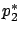
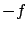

Let us now investigate whether the preceding results can be extended beyond the class of linear control systems. Regarding the bang-bang principle cited in the previous paragraph, the hope that it might be true for general nonlinear systems is quickly shattered by the following example.
A distinguishing feature of the above example is that the function

, whose sign determines the value of the optimal controlExample 4.1 should not be taken to suggest, however, that we must give up hope of formulating a bang-bang principle for nonlinear systems. After all, we saw in Section 4.4.2 that even for linear systems, to be able to prove that all time-optimal controls are bang-bang we need the normality assumption. It is conceivable that the bang-bang property of time-optimal controls for certain nonlinear systems can be guaranteed under an appropriate nonlinear counterpart of that assumption.
Motivated by these remarks, our goal now is to better formalize the phenomenon of singularity--and reach a deeper understanding of its reasons--for a class of systems that includes the linear systems considered in Section 4.4.2 as well as the nonlinear system (4.58). This class is composed of nonlinear systems affine in controls, defined as

From the Hamiltonian maximization condition we obtain, completely analogously to Section 4.4.2, that the components
In order to simplify calculations, from this point on we assume
that  , so that the input
, so that the input  is scalar and we have only one
switching function
is scalar and we have only one
switching function
where
In general, the Lie bracket of two differentiable vector fields  and
and  is defined as
is defined as
Note that the definitions of the Lie bracket for matrices (in linear algebra) and for vector fields (in differential geometry) usually follow the opposite sign conventions. The geometric meaning of the Lie bracket--which justifies its alternative name ``commutator"--is as follows (see Figure 4.16). Suppose that, starting at some point

(backward along
We can now write the result of the calculation (4.62) more informatively as

Lie brackets
can help us shed light on the bang-bang property.
For a singular optimal control to exist,  must identically vanish on some time interval. In view of (4.60) and (4.63), this can happen only if
must identically vanish on some time interval. In view of (4.60) and (4.63), this can happen only if  stays orthogonal to both
stays orthogonal to both  and
and
 . We have seen that in time-optimal problems
. We have seen that in time-optimal problems
 for all
for all  . Thus for planar systems (
. Thus for planar systems ( ) we can rule out singularity if
) we can rule out singularity if  and
and
 are linearly independent along the optimal trajectory.
are linearly independent along the optimal trajectory.
If  or
or  and
and  are not linearly independent, then we
have to look at higher derivatives of
are not linearly independent, then we
have to look at higher derivatives of  and see what it
takes for them to vanish as well. Rather than differentiating
and see what it
takes for them to vanish as well. Rather than differentiating
 again, let us revisit our derivation of
again, let us revisit our derivation of
 and try to see a general pattern in it. Consider an
arbitrary differentiable function
and try to see a general pattern in it. Consider an
arbitrary differentiable function
 . Following the
same calculation steps as in (4.62) and using the
definition of the Lie bracket, we easily arrive at
. Following the
same calculation steps as in (4.62) and using the
definition of the Lie bracket, we easily arrive at
holds with
![\begin{Exercise}Continuing this process, generate a
set of conditions that rule ...
...)^k ( g):=[ f,(\operatorname{ad}{
f})^{k-1} ( g)]$\ for $k\ge 1$. \end{Exercise}](img1448.gif)
We are now in a position to gain a better insight into our earlier observations by using the language of Lie brackets.
LINEAR SYSTEMS (SECTION ![[*]](crossref.gif) ). In the single-input case, we have
). In the single-input case, we have
 and
and  . Calculating the relevant Lie brackets, we obtain
. Calculating the relevant Lie brackets, we obtain  ,
,
 ,
,
 ,
,
 ,
,
 , etc. A crucial consequence of linearity is that iterated Lie brackets containing two
, etc. A crucial consequence of linearity is that iterated Lie brackets containing two  's are 0, which makes the derivatives of the switching function
's are 0, which makes the derivatives of the switching function  independent of
independent of  . It is easy to see that
. It is easy to see that  cannot vanish if
the vectors
cannot vanish if
the vectors
 span
span
 , which is precisely the controllability condition.
, which is precisely the controllability condition.
EXAMPLE REVISITED.
For the system (4.58), we have
 ,
,
 . The first Lie bracket is
. The first Lie bracket is
=-\begin{pmatrix}
0 & 2x_2\\
0 & 0
\end{pmatrix}\begin{pmatrix}
0\\
1
\end{pmatrix}=\begin{pmatrix}
-2x_2\\
0
\end{pmatrix}.
$](img1459.gif)
On the
![$\displaystyle [f,[f,g]](x)=\begin{pmatrix}
0 & -2\\
0 & 0
\end{pmatrix}\beg...
...pmatrix}
-2x_2\\
0
\end{pmatrix}=\begin{pmatrix}
0\\
0
\end{pmatrix}.
$](img1463.gif)
Since
It is worth noting that singular controls are not necessarily complex. The optimal control
 in Example 4.1 is actually quite simple. For single-input planar systems
in Example 4.1 is actually quite simple. For single-input planar systems
 ,
,
 ,
,
 , with
, with  and
and  real analytic, it can be shown that all time-optimal trajectories are
concatenations of a finite number of ``bang" pieces
(each corresponding to either
real analytic, it can be shown that all time-optimal trajectories are
concatenations of a finite number of ``bang" pieces
(each corresponding to either  or
or  ) and real analytic singular arcs. It is natural to ask whether a similar claim holds for other optimal control problems in
) and real analytic singular arcs. It is natural to ask whether a similar claim holds for other optimal control problems in
 or for
time-optimal control problems in
or for
time-optimal control problems in
 . We are about to see that these two questions are related and that the answer to both is negative.
. We are about to see that these two questions are related and that the answer to both is negative.


)\rangle +\langle p^*(t),[g,h](x^*(t))\rangle u^*.$](img1435.gif)
![$\displaystyle u^*(t)=-\dfrac{\langle p^*(t),[f,[f,g]](x^*(t))\rangle }{\langle p^*(t),[g,[f,g]](x^*(t))\rangle }$](img1441.gif)